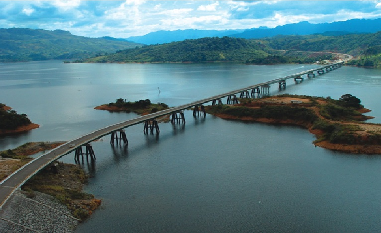
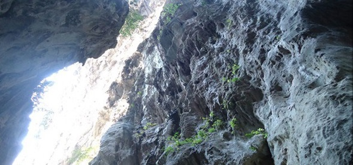

El 14 de noviembre de 2011, la LXIV Legislatura del Congreso del Estado aprobó la Tercer Reforma a la Constitución Política del Estado de Chiapas propuesta por el Ejecutivo del Estado, donde se contempla la creación del municipio de Mezcalapa con cabecera municipal en Raudales, Malpaso. Este municipio pertenece a la región III Mezcalapa
Raudales Malpaso es una localidad del estado mexicano de Chiapas, localizada en el norte del estado cercana a la frontera conTabasco y junto a la cortina de la Presa Malpaso o Nezahualcóyotl. Es cebecera del municipio de Mezcalapa.

Se encuentra localizada en las coordenadas de 17°11'10?N 93°36'26?O y según el Conteo de Población y Vivienda de 2005 delInstituto Nacional de Estadística y Geografía tiene una población de 6,502 habitantes. Raudales Malpaso fue fundada en 1968 al darse la construcción de la Presa Malpaso, la segunda más grande de México, y en ella fueron relocalizados la población desplazada del territorio que fue inundada por el vaso de la presa, que ocupó más de la mitad del territorio del municipio de Tecpatán; también fueron construidas en la población las instalaciones de la Comisión Federal de Electricidad de operación hidroeléctrica de la presa y el personal que lo maneja.